I have tried to live my life by this quote long before I ever heard it referenced. However, I LOVE Ted Lasso and it brought a deeper meaning of this quote to me.
I have traveled all around the world to try to experience other people's philosophies and ways of life in order to better understand how I relate to people from all walks of life. People tend to think they are so different from each other, and while we are all unique in our own ways, there is so much that connects each and every one of us.
Welcome to a sneak peak into my life and my journey!
Family
That smokeshow there on the left is my wonderful wife, Dayna. She is incredible at art, teaches yoga, and loves to travel with me wherever we can.
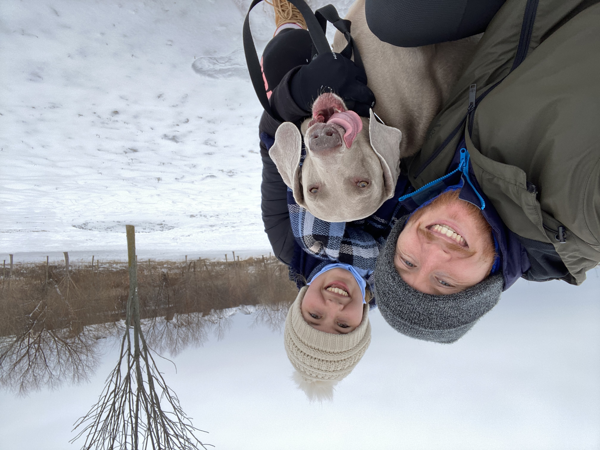Our fur-baby on the right is named Moose. He is a miniature horse (he's a Weimaraner). He loves ponds, long walks, and chewing every blanket in our house.
Travel
Speaking of travel, here is a peak into some of our travels:
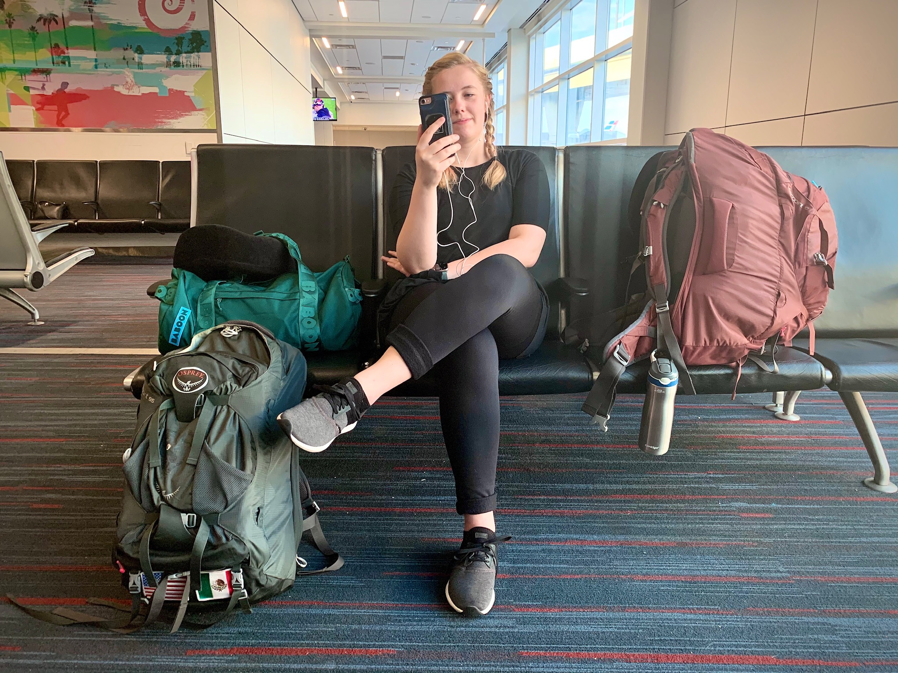 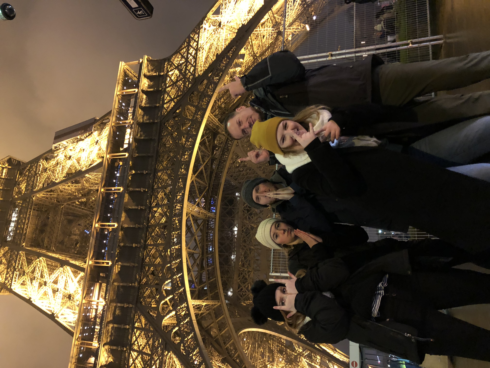 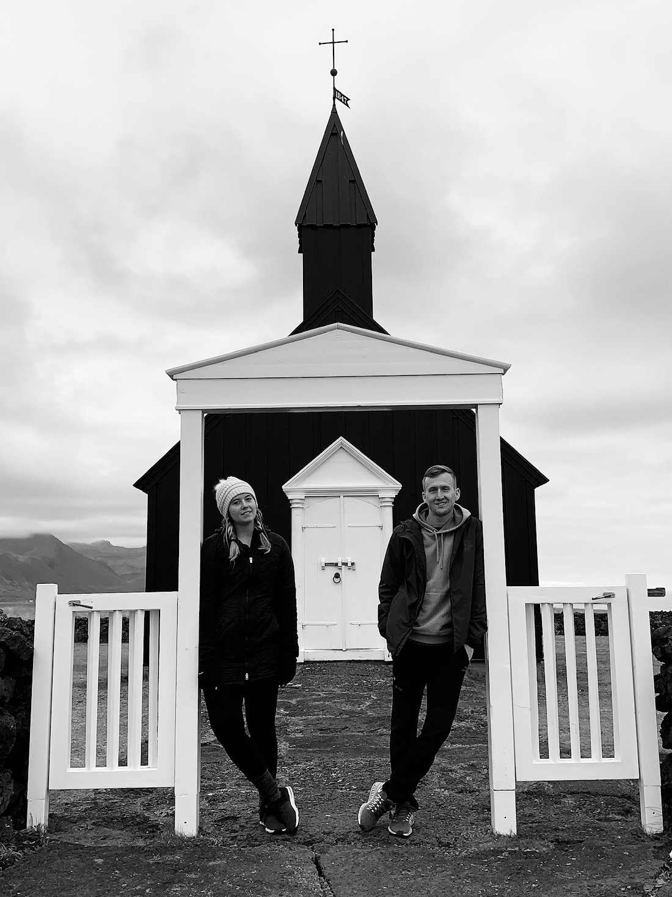 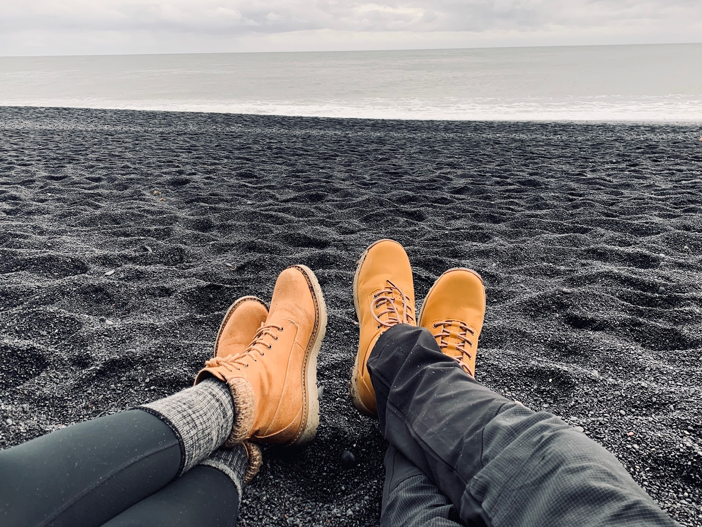My wife and I are avid travelers and adventurers. We love to find any excuse to new places around the world any chance we get. We have visited several countries together where we try to dive into the culture and food of the region as much as we can. Our most recent big trip was to Iceland where we traversed the southern and western parts of the country, enjoyed the Northern Lights, and enjoyed a week off from our normal working lives.
Sports
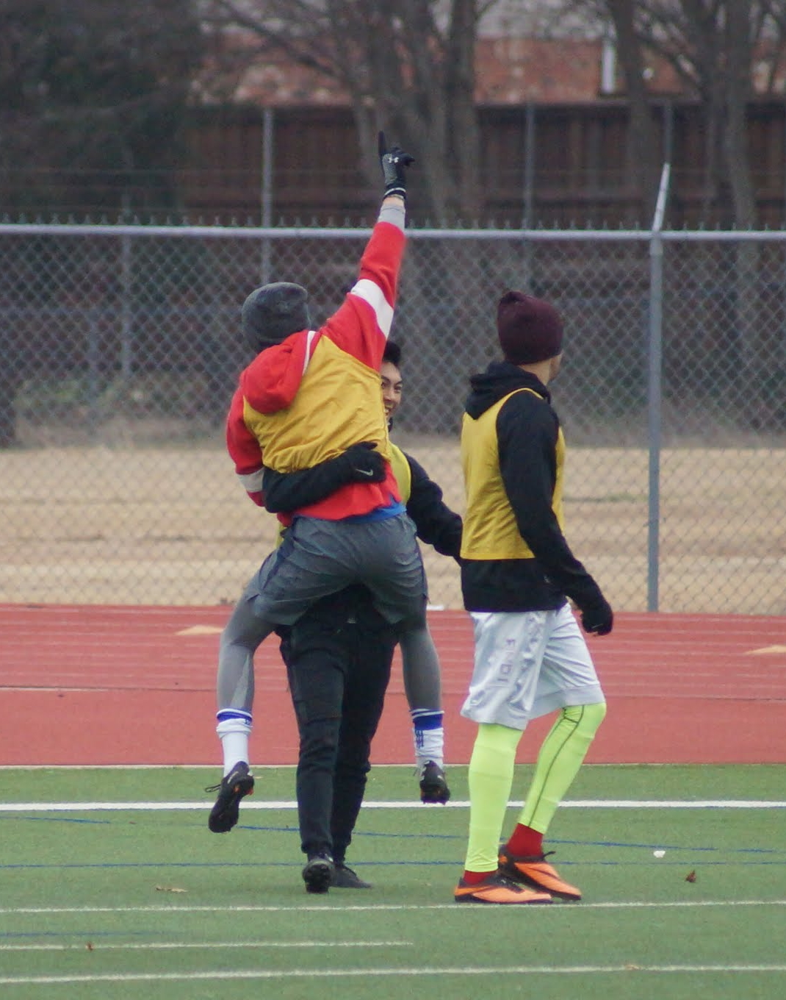 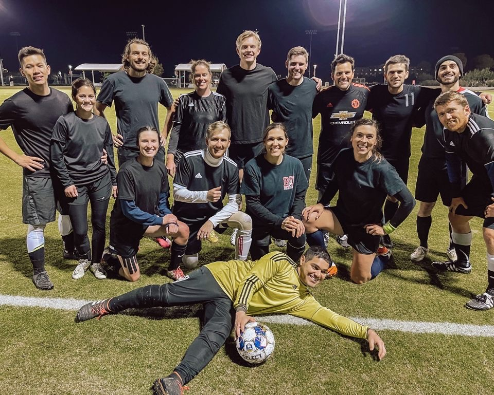
I grew up on all sports, latching on to soccer in high school as my sport of choice. I have enjoyed attending many sporting events as well as toured as many european soccer stadiums as I can when I travel. Sports have played a major part in many of my best memories, has helped me develop some of my best friendships, and given me some amazing mentors in past coaches.
Enjoy this video of one of the greatest midfielders to ever play the greatest sport.
*Credit to Red Devils Stuio for an incredible video.*
Fun
Enjoy some random pictures of things my wife and I enjoy in life; Friends, trying new activities, nerding out on games, and date nights!
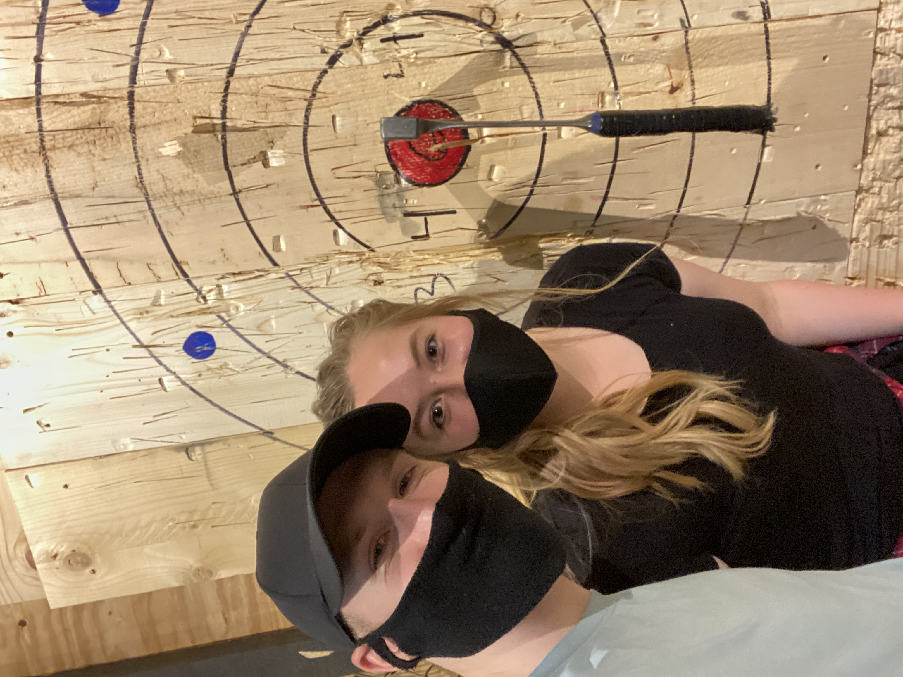 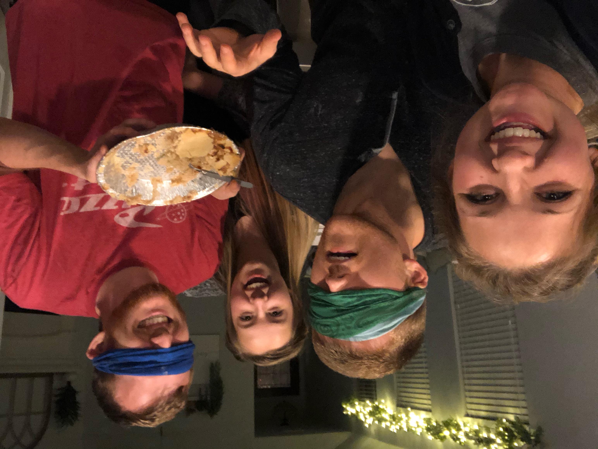 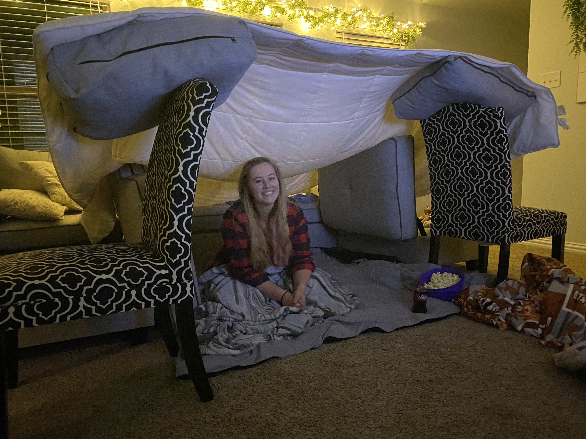 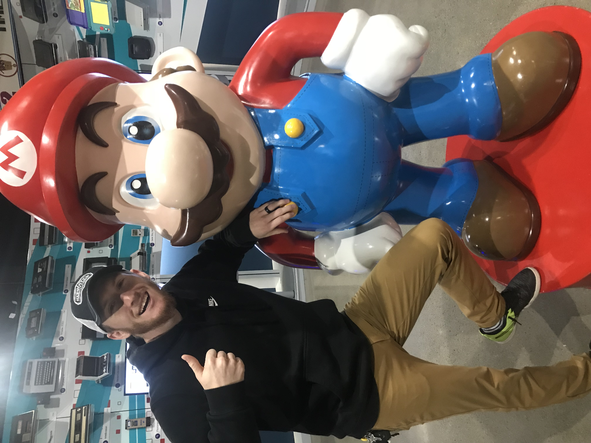To get a deeper dive into who I am, visit my Instagram Profile.